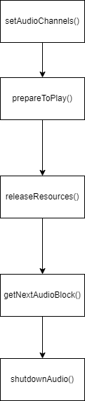

juce实战(1)：制作一个白噪声合成器
好的我回来了。 参考链接：tutorial_simple_synth_noise,官方的教程已经写的很好了，我只是为了记录一下
首先按照官方教程创建一个音频应用，选择projucer application下的audio，创建项目模板
打开项目，先看到MainComponent.h，发现我们的类继承于juce::AudioAppComponent。
了解一下juce音频应用的生命周期(licecycle): 
prepareToPlay():在音频处理前调用；
releaseResources():在音频处理完成时调用；
getNextAudioBlock():当音频硬件需要新的音频数据（块）的时候调用；这个函数是最重要的
setAudioChannels():设定输入与输出声道，在构造函数进行设置，这个函数的触发意味着音频处理的开始；
shutdownAudio():这个就不需解释啦。
第一步：设置声道数量： 先转到MainComponent.cpp
同时，引入juce的random类：MainComponent.h1
2
3
4
5
6
7
8
9
10
11
12
13
14
15
16
17
18
19
20
21
22
23
24
25
26
27
28
29
30
31
32
33
34
35
36
37
38
39
40
41
42
43
44
45
46MainComponent::MainComponent()
{
// Make sure you set the size of the component after
// you add any child components.
setSize (800, 600);
// Some platforms require permissions to open input channels so request that here
if (juce::RuntimePermissions::isRequired (juce::RuntimePermissions::recordAudio)
&& ! juce::RuntimePermissions::isGranted (juce::RuntimePermissions::recordAudio))
{
juce::RuntimePermissions::request (juce::RuntimePermissions::recordAudio,
[&] (bool granted) { setAudioChannels (granted ? 2 : 0, 2); });
}
else
{
// Specify the number of input and output channels that we want to open
setAudioChannels (0, 2); // no inputs, 2 outputs
}
}
```
因为只是生成器，所以不需要有输入，且设定为两个输出（左右声道）。
1. prepareToPlay()不需要做什么，可以先不管（喜欢的话随便输出点什么吧）
2. 最关键的一步:生成白噪音：
```cpp
void MainComponent::getNextAudioBlock (const juce::AudioSourceChannelInfo& bufferToFill)
{
// Your audio-processing code goes here!
// For more details, see the help for AudioProcessor::getNextAudioBlock()
// Right now we are not producing any data, in which case we need to clear the buffer
// (to prevent the output of random noise)
//bufferToFill.clearActiveBufferRegion();
for (auto channel = 0; channel < bufferToFill.buffer->getNumChannels(); ++channel)
{
// Get a pointer to the start sample in the buffer for this audio output channel
auto* buffer = bufferToFill.buffer->getWritePointer(channel, bufferToFill.startSample);
// Fill the required number of samples with noise between -0.125 and +0.125
for (auto sample = 0; sample < bufferToFill.numSamples; ++sample)
buffer[sample] = random.nextFloat() * 0.25f - 0.125f;
}
}1
2
3
4
5
6
7private:
//==============================================================================
// Your private member variables go here...
juce::Random random;
JUCE_DECLARE_NON_COPYABLE_WITH_LEAK_DETECTOR (MainComponent)
代码应该很好懂，将-0.125到0.125的随机数字写入缓冲区， bufferToFill.buffer->getWritePointer(channel, bufferToFill.startSample);中的bufferToFill.startSample 指的是缓冲区预期中写入数据的第一个样本。
最后再析构函数中加上shutdown 1
2
3
4
5~MainContentComponent() override
{
shutdownAudio();
}
思考： 1. 让getNextAudioBlock中buffer[sample] = 一个常数，听上去会怎么样？（嗡嗡响） 2. 调大区间或者调大数值（如[2,4]或更大），听上去有什么改变？（更大声） 3. 如何播放正弦波？
稍微修改一下： 1
2
3
4
5
6
7
8
9
10
11
12
13
14
15
16void MainComponent::getNextAudioBlock (const juce::AudioSourceChannelInfo& bufferToFill)
{
auto level = 0.125f;
auto* leftBuffer = bufferToFill.buffer->getWritePointer(0, bufferToFill.startSample);
auto* rightBuffer = bufferToFill.buffer->getWritePointer(1, bufferToFill.startSample);
for (auto sample = 0; sample < bufferToFill.numSamples; ++sample)
{
auto currentSample = (float)std::sin(currentAngle);
currentAngle += angleDelta;
leftBuffer[sample] = currentSample * level;
rightBuffer[sample] = currentSample * level;
}
}1
double currentAngle = 0.0, angleDelta = 31.4;